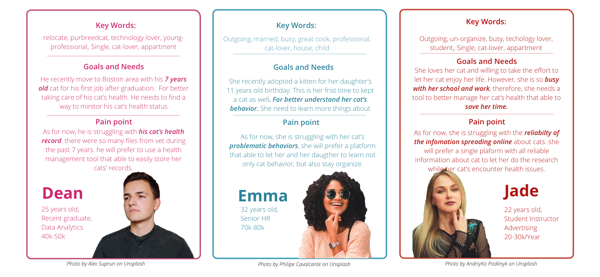

"DR.MEOW"
Keep learning, keep organizing, and share experiences
Project Type
Individual Project
Project Goal
Providing an easy access platform that able to provide reliable information as well as a way to better manage pet health.
Overview
DR.MEOW is an individual project that I finished through the 2019 fall semester at UMSI. It is a pet health management application that helps cat owners better manager cat's health by better document health records and easier access to reliable information.
Time
OCT 2019 - DEC 2019
Involvement
Product Designer & User researcher
Tools
Sketch
InVision
Adobe Photoshop
Adobe Illustrator
Instrustor
Elena Godin, Professor of SI 520 - Interaction Design
RESEARCH
01. Define the problem:
29% of the American household own cats nowadays. There were 3.2 million cats enter US shelters in 2019 and 71 percent of them were euthanized. According to the ASPCA’s National Rehoming Survey, pet problems are the most common reason that owners rehome their pet, Pet problems were defined as problematic behaviors, aggressive behaviors, grew larger than expected, or health problems owner couldn’t handle. In other words, owners who abandon their cats normally due to their irresponsibility and lack of cat raising knowledge. Base on my previous interview, the sources for how parenting cats are spread on the internet with a lack of reliability and organize. Therefore, there are always situations that their lives can be threatened.
02. What other brands do?

Babelbark
Babelbark is a pet health management app that providing services including activity checking(pair with the monitor), medical records, diet analysis.etc.
It requires monthly membership fee.
PetDesk
PetDesk supports appointment making with local vets/grooming within the app,
access pet’s health records and prescriptions.It doesn't providing easy access cat parenting Information inside the app.
Chewy
Chewy is a well-known online retailer for pet’s, it partially supports pet profile.
Facebook local/breed pet group
Facebook local/breed pet group provides opptunities for pet owners to engage and exchange information.
03. Informal Interviews with potential users
I conducted informal interviews with total of 6 interviewees including four pet owners and two Shelter Volunteers.
Combining with the previous research, some key insights were:
a. Most Owners learn about their cats through word of mouth.
b. The lack of knowledge about cats lead them to future cost of cat health.
c. Some owners don't have the ability to handle their cat's health care.
d. Cat owners questioning the reliability of the information that spreading online so that they
have to go through different platform/ sites looking for information they want.
e. Prescriptions and health records are worth to document in a easily access form.
04. The initial Project Goal was defined at this point:
After the research shows above, I was further confirmed the problem can be mostly solved by better managing cat health and providing easily access information .Therefore, I devided to design a tool that able to furfill the needs.
IDEATION
01. Persona
02. Brainstorming and Storyboard

03. Key Features
a. Allows user to find reliable infomation.
b. Supports user to update health records quickly(Optical character recognition)
c. Supports user to better analysis their cat's health.
04. User flows
Emma is struggling with her cat's problematic behaviors. she is able to save a ton of time by searching directly using DR.MEOW's checker function.
Dean is looking for a tool that able to easily store his cat's health record from past 7 years. The quick add function provides the ability to update health record by simplily snap a photo.
Jade wants a faster experience to manage her cat health. The pet page with charts and analysis results perfectly solve her problem.
PROTOTYPE
02. Design Decisions
From User testing 1 & 2:
My original ideas are to have a Quick access function featuring quick entries to help cat owners learn about cats through different categories,
and a checker function able to check diseases by filtering body parts of cats.
However, during the 1ST user texting, 3/6 users expressed similar concerns as: " They are more likely to find their cats' problems through their
behaviors rather than through body parts' symptoms. At the same time, too many symptoms are listed results frustrations while they are going through all possibilities".
Therefore, I decided to change the filtering features to a conversation bot trigger by keywords, so that the users can find the information they need easier through simple keywords input.
If I decided to do so, the quick access feature will overlap with the checker feature. In this case, I decided to combine them as one component to locate in the navigation bar.
Through other informal user testings, both of the users fail to understand the meaning of the "checker". My new idea is to change the word choice from "Checker" to "FAQs"
From User testing 1 & 2:
4 of 6 users didn't find the page that monitoring pet health which is originally placed inside the "Profile" component. Dr. Meow focusing on pet health, therefore, the cat monitoring page should be the priority for users to noticed.
SELF EVALUATION
01. Is it a good design?
Pros:
1. DR.MEOW is using image processing algorithm, an innovative way to auto classify the health records.
It provides users a faster way to organize as well as store their cat's health records through simply as snap a photo.
2. Users able to lay on DR.MEOW to analysis their cat's health more accurately, getting information more easily and credible
Cons:
1. Some functionailties are hard to accomplish from tech aspests.
2. The design might somehow not understandable enough.
02. I like, I wish, What if, I wonder.....
I like - how this product able to give auto-generate recommendations
I wish...i can have chance to observe/work in vet to better understand about cat health
I wonder...my product needs a few more iterations before it launch.
03. Key Take Aways
1. Remember, brainstorming makes ideas, sketching soild ideas and iterating converts the ideas better.
Designs bring frustrations all the time not only for users but also for designers.
In real-world cases, we are always short on time and great ideas as well, but remember, design inspirations come from every minute of our life.
Don't be overly stressful and trust yourself to attempt for more possibilities. At the same time, Discussing the project with your friends and brainstorm together or share your ideas and logics with them if the project is allowable.
Using sketch to visualize ideas always able to help you capture more ideas, sometimes better ideas along the way and I didn't realize that before.
It's true that digital prototype able to do the job as well, however, the original thoughts were lost while people are too focusing on making the prototype prettier.
The most crucial element within the iteration process is not only to get feedback from your perspective,
but also to users. That's the only way that we able to keep design going in the right direction while iterating.
During iterations, I was able to convert my ideas and make adjustments to my current design base on user testings and research results.
At the same time, accommodate my previous work with the new knowledge I earned constantly bring new insights and support me with confidence as well.


{kind=link}
{kind=link}
{kind=link}
{kind=link}
{kind=link}
{kind=link}
{kind=link}
{kind=link}
{kind=link}
{kind=link}